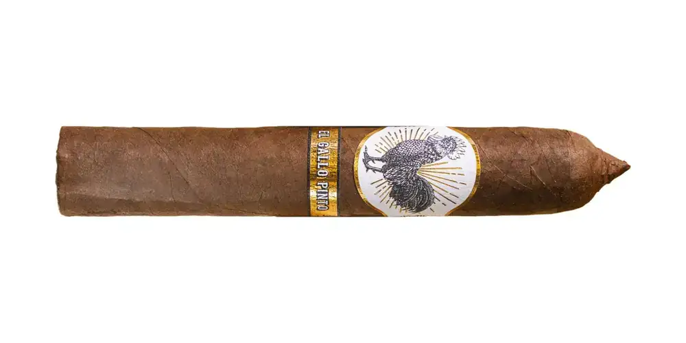

Gallo Pinto
By El Club del Turro · Río Grande, Puerto Rico
Nicaraguan Viso binder; Puerto Rican Corojo filler. A collaboration with Orquesta Macabeo.
- Wrapper: Sumatra
- Strength: Mild
- Vitolas: Robusto 5" x 50
Sources: 1
See Gallo Pinto in the app, rate it and save it to Mi Hoja.